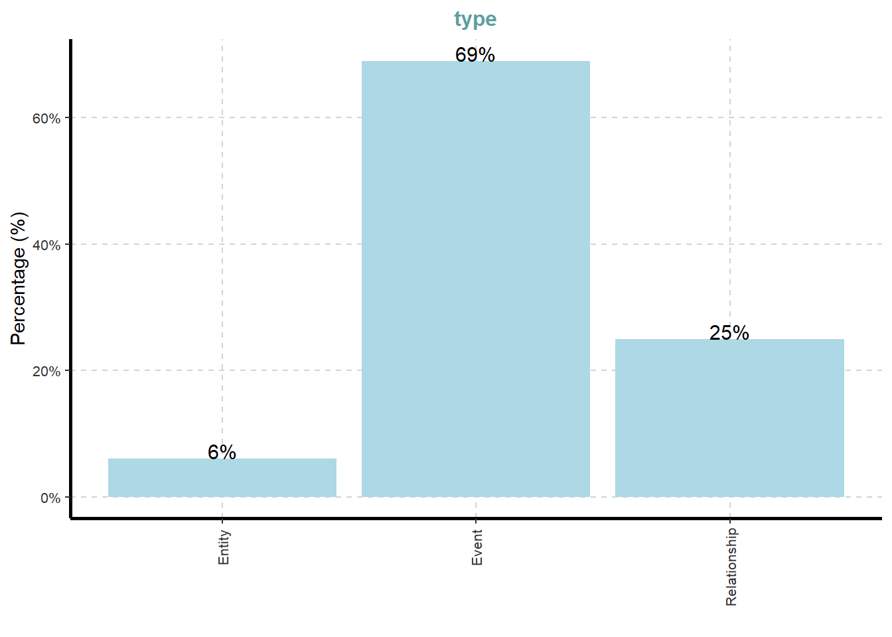
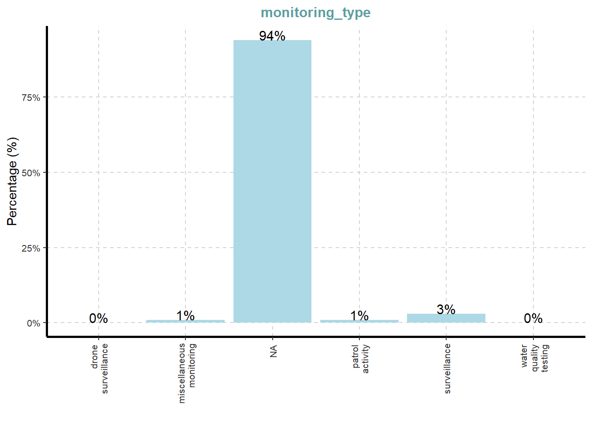
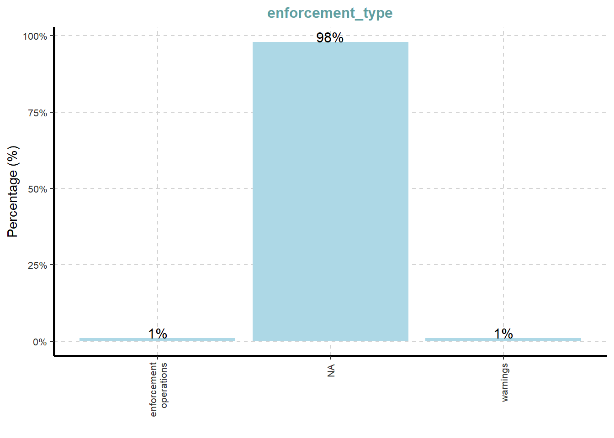
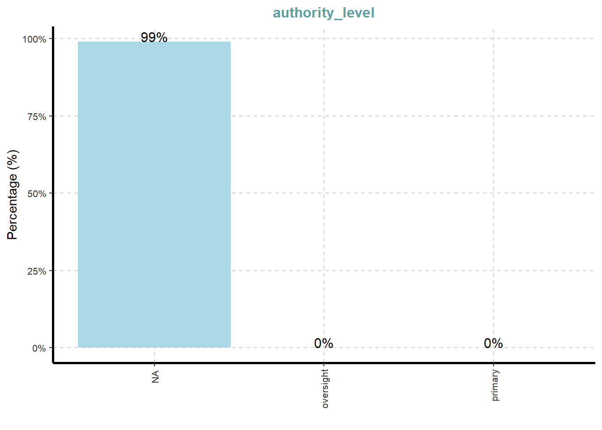
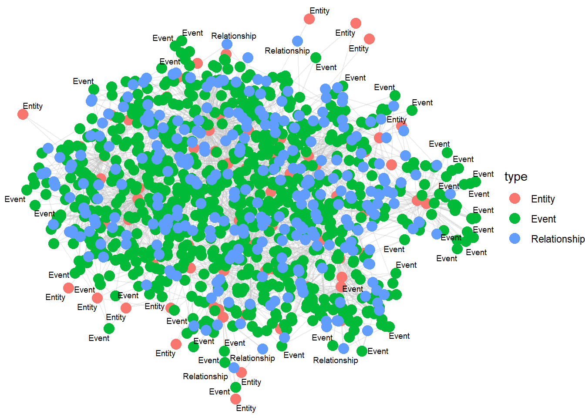

pacman::p_load(tidyverse, jsonlite, SmartEDA, tidygraph, ggraph, knitr, DT, stringr)Take-home Exercise 2
1. Background
Over the past decade, the community of Oceanus has undergone transformations and challenges evolving from its fishing-centric origins. (there used to be illegal fishing but now these ppl has shifting on to another investment e.g. ocean tourism industry which makes a growing tension.) with teh growing tourism, it attracted interntaional pop star Sailor Shift (who wanted to shoot his/her new mv in the island).
Clepper Jensen is a former analyst at FishEye company who is new a seasoned journalist for Hecklee Herald, is observing the tension and recently looking at temporary closure of Nemo Reef. By using investigative tools and radio communication, he uncovered a complex web of expedited approvals and secretive logistics -> this reveals story involving high-level Oceanus officials, Sailor Shift’s team, local influential families adn local conservationist group (the Green Guardians) - this is a story of corruption and manipulation.
Your task is to develop new and novel visualizations and visual analytics approaches to help Clepper get to the bottom of this story.
1.2 Objective
Objective of this exercise:
Clepper diligently recorded all intercepted radio communications over the last two weeks. With the help of his intern, they have analyzed their content to identify important events and relationships between key players. The result is a knowledge graph describing the last two weeks on Oceanus. Clepper and his intern have spent a large amount of time generating this knowledge graph, and they would now like some assistance using it to answer the following questions.
Clepper has noticed that people often communicate with (or about) the same people or vessels, and that grouping them together may help with the investigation.
Use visual analytics to help Clepper understand and explore the interactions and relationships between vessels and people in the knowledge graph.
Are there groups that are more closely associated? If so, what are the topic areas that are predominant for each group?
- For example, these groupings could be related to: Environmentalism (known associates of Green Guardians), Sailor Shift, and fishing/leisure vessels.
Clepper suspects that Nadia Conti, who was formerly entangled in an illegal fishing scheme, may have continued illicit activity within Oceanus
Through visual analytics, provide evidence that Nadia is, or is not, doing something illegal
Summarize Nadia’s actions visually. Are Clepper’s suspicions justified?
1.3 The Data
1.4 Load Required Libraries
The libraries used in this exercise are the following:
| Package Name | Description |
|---|---|
| jsonlite | Convert JSON data to R objects |
| tidyverse | Provide key data transformation functions |
| SmartEDA | Help in getting the complete exploratory data analysis by running the function instead of writing long R codes |
| tidygraph | Provides tidy API for network or graph manipulation |
| ggraph | Extension of the ggplot2 API tailored to graph visualizations |
| knitr | Provides a tool for dynamic report generation |
| datable | Provides an R interface to the JavaScript library DataTables |
| stringr | Provides a cohesive set of functions designed to make working with strings easy |
1.5 Import Data
In this exercise, we’ll be using the mc3.json file and extract data using the jsonlite library.
MC3 <- fromJSON("data/MC3_graph.json")
MC3_schema <- fromJSON("data/MC3_schema.json")Inspect Knowledge Graph Structure
Before preparing the data, we’ll check the structure of the knowledge graph.
glimpse(MC3)List of 5
$ directed : logi TRUE
$ multigraph: logi FALSE
$ graph :List of 4
..$ mode : chr "static"
..$ edge_default: Named list()
..$ node_default: Named list()
..$ name : chr "VAST_MC3_Knowledge_Graph"
$ nodes :'data.frame': 1159 obs. of 31 variables:
..$ type : chr [1:1159] "Entity" "Entity" "Entity" "Entity" ...
..$ label : chr [1:1159] "Sam" "Kelly" "Nadia Conti" "Elise" ...
..$ name : chr [1:1159] "Sam" "Kelly" "Nadia Conti" "Elise" ...
..$ sub_type : chr [1:1159] "Person" "Person" "Person" "Person" ...
..$ id : chr [1:1159] "Sam" "Kelly" "Nadia Conti" "Elise" ...
..$ timestamp : chr [1:1159] NA NA NA NA ...
..$ monitoring_type : chr [1:1159] NA NA NA NA ...
..$ findings : chr [1:1159] NA NA NA NA ...
..$ content : chr [1:1159] NA NA NA NA ...
..$ assessment_type : chr [1:1159] NA NA NA NA ...
..$ results : chr [1:1159] NA NA NA NA ...
..$ movement_type : chr [1:1159] NA NA NA NA ...
..$ destination : chr [1:1159] NA NA NA NA ...
..$ enforcement_type : chr [1:1159] NA NA NA NA ...
..$ outcome : chr [1:1159] NA NA NA NA ...
..$ activity_type : chr [1:1159] NA NA NA NA ...
..$ participants : int [1:1159] NA NA NA NA NA NA NA NA NA NA ...
..$ thing_collected :'data.frame': 1159 obs. of 2 variables:
.. ..$ type: chr [1:1159] NA NA NA NA ...
.. ..$ name: chr [1:1159] NA NA NA NA ...
..$ reference : chr [1:1159] NA NA NA NA ...
..$ date : chr [1:1159] NA NA NA NA ...
..$ time : chr [1:1159] NA NA NA NA ...
..$ friendship_type : chr [1:1159] NA NA NA NA ...
..$ permission_type : chr [1:1159] NA NA NA NA ...
..$ start_date : chr [1:1159] NA NA NA NA ...
..$ end_date : chr [1:1159] NA NA NA NA ...
..$ report_type : chr [1:1159] NA NA NA NA ...
..$ submission_date : chr [1:1159] NA NA NA NA ...
..$ jurisdiction_type: chr [1:1159] NA NA NA NA ...
..$ authority_level : chr [1:1159] NA NA NA NA ...
..$ coordination_type: chr [1:1159] NA NA NA NA ...
..$ operational_role : chr [1:1159] NA NA NA NA ...
$ edges :'data.frame': 3226 obs. of 5 variables:
..$ id : chr [1:3226] "2" "3" "5" "3013" ...
..$ is_inferred: logi [1:3226] TRUE FALSE TRUE TRUE TRUE TRUE ...
..$ source : chr [1:3226] "Sam" "Sam" "Sam" "Sam" ...
..$ target : chr [1:3226] "Relationship_Suspicious_217" "Event_Communication_370" "Event_Assessment_600" "Relationship_Colleagues_430" ...
..$ type : chr [1:3226] NA "sent" NA NA ...Since the industry column is in list data type, we’’ exclude the column since list data type isn’t acceptable by tbl_graph().
Extract Edges and Nodes Tables
The as_tibble() function is used to extract nodes and links tibble data frame from MC3 tibble data frame.
mc3_nodes <- as_tibble(MC3$nodes)
mc3_edges <- as_tibble(MC3$edges)Initial EDA
We’ll use ExpCatViz() from SmartEDA library to reveal frequency distribution of all categorical fields from mc3_nodes.
ExpCatViz(data=mc3_nodes,
col="lightblue")[[1]]
[[2]]
[[3]]
[[4]]
[[5]]
[[6]]
[[7]]
[[8]]
[[9]]
[[10]]
[[11]]
[[12]]
[[13]]
[[14]]
Data Cleaning and Wrangling
The following steps are taken to clean the nodes:
Convert values in id into character data type
Exclude record with id that are missing
Exclude records with similar id values
Exclude thing_collected field
mc3_nodes_cleaned <- mc3_nodes %>%
mutate(id = as.character(id)) %>%
filter(!is.na(id)) %>%
distinct(id, .keep_all = TRUE) %>%
select(-thing_collected)Next, the following steps are taken to clean the edges:
Rename source column into from_id and target column into to_id
Convert values in from_id and to_id column into character data type
Exclude values in from_id and to_id that’s not found in the id column from mc3_nodes_cleaned
Exclude records where from_id and to_id, or from_id or to_id is missing
mc3_edges_cleaned <- mc3_edges %>%
rename(from_id = source,
to_id = target) %>%
mutate(across(c(from_id, to_id),
as.character)) %>%
filter(from_id %in% mc3_nodes_cleaned$id,
to_id %in% mc3_nodes_cleaned$id) %>%
filter(!is.na(from_id), !is.na(to_id))A new dataframe from the existing data frame (mc3_nodes_cleaned) and .row_id column is added which assigns unique row number to each row number (works like row index). Then we select id and .row_id columns whereas other columns are dropped.
node_index_lookup <- mc3_nodes_cleaned %>%
mutate(.row_id = row_number()) %>%
select(id, .row_id)Then from_id and to_id columns in mc_edges_indexed are converted ito integer indices. The rows with unmatched nodes are also dropped.
mc3_edges_indexed <- mc3_edges_cleaned %>%
left_join(node_index_lookup,
by = c("from_id" = "id")) %>%
rename(from = .row_id) %>%
left_join(node_index_lookup,
by = c("to_id" = "id")) %>%
rename(to = .row_id) %>%
select(from, to, is_inferred, type) %>%
filter(!is.na(from) & !is.na(to)) Next, the node list will only include nodes that are used in the edge list and new indices are assigned
used_node_indices <- sort(
unique(c(mc3_edges_indexed$from,
mc3_edges_indexed$to)))
mc3_nodes_final <- mc3_nodes_cleaned %>%
slice(used_node_indices) %>%
mutate(new_index = row_number())The lookup is rebuild from old index to new index.
old_to_new_index <- tibble(
old_index = used_node_indices,
new_index = seq_along(
used_node_indices))Then, we’ll update edge indices to match new node table
mc3_edges_final <- mc3_edges_indexed %>%
left_join(old_to_new_index,
by = c("from" = "old_index")) %>%
rename(from_new = new_index) %>%
left_join(old_to_new_index,
by = c("to" = "old_index")) %>%
rename(to_new = new_index) %>%
select(from = from_new, to = to_new,
is_inferred, type)Build tidygraph Object
Next, we’ll build the tidygraph object
mc3_graph <- tbl_graph(
nodes = mc3_nodes_final,
edges = mc3_edges_final,
directed = TRUE
)str(mc3_graph)Classes 'tbl_graph', 'igraph' hidden list of 10
$ : num 1159
$ : logi TRUE
$ : num [1:3226] 0 0 0 0 0 0 0 1 1 1 ...
$ : num [1:3226] 1137 356 746 894 875 ...
$ : NULL
$ : NULL
$ : NULL
$ : NULL
$ :List of 4
..$ : num [1:3] 1 0 1
..$ : Named list()
..$ :List of 31
.. ..$ type : chr [1:1159] "Entity" "Entity" "Entity" "Entity" ...
.. ..$ label : chr [1:1159] "Sam" "Kelly" "Nadia Conti" "Elise" ...
.. ..$ name : chr [1:1159] "Sam" "Kelly" "Nadia Conti" "Elise" ...
.. ..$ sub_type : chr [1:1159] "Person" "Person" "Person" "Person" ...
.. ..$ id : chr [1:1159] "Sam" "Kelly" "Nadia Conti" "Elise" ...
.. ..$ timestamp : chr [1:1159] NA NA NA NA ...
.. ..$ monitoring_type : chr [1:1159] NA NA NA NA ...
.. ..$ findings : chr [1:1159] NA NA NA NA ...
.. ..$ content : chr [1:1159] NA NA NA NA ...
.. ..$ assessment_type : chr [1:1159] NA NA NA NA ...
.. ..$ results : chr [1:1159] NA NA NA NA ...
.. ..$ movement_type : chr [1:1159] NA NA NA NA ...
.. ..$ destination : chr [1:1159] NA NA NA NA ...
.. ..$ enforcement_type : chr [1:1159] NA NA NA NA ...
.. ..$ outcome : chr [1:1159] NA NA NA NA ...
.. ..$ activity_type : chr [1:1159] NA NA NA NA ...
.. ..$ participants : int [1:1159] NA NA NA NA NA NA NA NA NA NA ...
.. ..$ reference : chr [1:1159] NA NA NA NA ...
.. ..$ date : chr [1:1159] NA NA NA NA ...
.. ..$ time : chr [1:1159] NA NA NA NA ...
.. ..$ friendship_type : chr [1:1159] NA NA NA NA ...
.. ..$ permission_type : chr [1:1159] NA NA NA NA ...
.. ..$ start_date : chr [1:1159] NA NA NA NA ...
.. ..$ end_date : chr [1:1159] NA NA NA NA ...
.. ..$ report_type : chr [1:1159] NA NA NA NA ...
.. ..$ submission_date : chr [1:1159] NA NA NA NA ...
.. ..$ jurisdiction_type: chr [1:1159] NA NA NA NA ...
.. ..$ authority_level : chr [1:1159] NA NA NA NA ...
.. ..$ coordination_type: chr [1:1159] NA NA NA NA ...
.. ..$ operational_role : chr [1:1159] NA NA NA NA ...
.. ..$ new_index : int [1:1159] 1 2 3 4 5 6 7 8 9 10 ...
..$ :List of 2
.. ..$ is_inferred: logi [1:3226] TRUE FALSE TRUE TRUE TRUE TRUE ...
.. ..$ type : chr [1:3226] NA "sent" NA NA ...
$ :<environment: 0x000002ac4758b3f0>
- attr(*, "active")= chr "nodes"Visualize Knowledge Graph
set.seed(1234)ggraph(mc3_graph,
layout = "fr") +
geom_edge_link(alpha = 0.3,
colour = "gray") +
geom_node_point(aes(color = `type`),
size = 4) +
geom_node_text(aes(label = type),
repel = TRUE,
size = 2.5) +
theme_void()
graph_unique_person <- mc3_graph %>%
activate(nodes) %>%
filter(`sub_type` == "Person") %>%
distinct()
entity_table <- as_tibble(graph_unique_person, active = "nodes")
datatable(entity_table)person_nodes <- mc3_graph %>%
activate(nodes) %>%
as_tibble() %>%
mutate(node_id = row_number()) %>%
filter(sub_type == "Person")
entity_tables <- as_tibble(person_nodes, active = "nodes")
datatable(entity_tables)edges_tbl <- mc3_graph %>%
activate(edges) %>%
as_tibble()
# Step 2: Extract from/to indices and rename to avoid conflict
edge_index <- igraph::as_data_frame(mc3_graph, what = "edges")[, 1:2]
colnames(edge_index) <- c("from_id", "to_id") # Rename to avoid conflict
# Step 3: Combine cleanly
edges_tbl <- bind_cols(edges_tbl, edge_index)Communication on Nadia Conti
the best way to know
comm_about_nadia <- mc3_graph %>%
activate(nodes) %>%
filter(str_detect(content, "Nadia Conti| Nadia | Conti ")) %>%
distinct(content, .keep_all = TRUE)
comm_about_nadia %>%
as_tibble() %>%
select(label, id, timestamp, content,monitoring_type, findings, new_index) %>%
datatable()https://github.com/feddelegrand7/cronologia
comm_about_permit <- mc3_graph %>% activate(nodes) %>% filter(str_detect(content, "#CR-7844"))
comm_about_permit %>% as_tibble() %>% select(label, id, timestamp, content,monitoring_type, findings, new_index) %>% datatable()comm_encryption <- mc3_graph %>% activate(nodes) %>% filter(str_detect(content, "Delta-3 encryption"))
comm_encryption %>% as_tibble() %>% select(label, id, timestamp, content,monitoring_type, findings, new_index) %>% datatable()comm_harbor_access <- mc3_graph %>% activate(nodes) %>% filter(str_detect(content, "ALPHA-937"))
comm_harbor_access %>% as_tibble() %>% select(label, id, timestamp, content,monitoring_type, findings, new_index) %>% datatable()comm_berth_17 <- mc3_graph %>% activate(nodes) %>% filter(str_detect(content, "Berth 14"))
comm_encryption %>% as_tibble() %>% select(label, id, timestamp, content,monitoring_type, findings, new_index) %>% datatable()comm_nr_1045 <- mc3_graph %>% activate(nodes) %>% filter(str_detect(content, "NR-1045"))
comm_nr_1045 %>% as_tibble() %>% select(label, id, timestamp, content,monitoring_type, findings, new_index) %>% datatable()comm_oct_14 <- mc3_graph %>% activate(nodes) %>% filter(str_detect(content, "southwest"))
comm_oct_14 %>% as_tibble() %>% select(label, id, timestamp, content,monitoring_type, findings, new_index) %>% datatable()